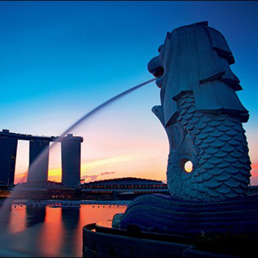

新加坡位于马来半岛南端、马六甲海峡出入口，属热带海洋性气候，常年高温多雨。新加坡风光绮丽，终年常绿，岛上花园遍布，绿树成荫，素以整洁和美丽著称。全国耕地无几，人口多居住在城市，因此被称为“城市国家”。
中国正在打造的新的经济战略宏图 -海上丝绸之路是陆上丝绸之路的延伸，又被称为香料之路、陶瓷之路，形成于秦汉时期。海上丝绸之路起点位于中国福建 泉州市，形成主因是因为中国东南沿海山多平原少，且内部往来不易，因此自古许多人便积极向海上发展。又为了解决 陆路的不便性，因为陆路受地形影响，前往西域会经过许多较不适合人类居住的地区，又中国东岸夏、冬两季有 季风助航，因此也增加了由海路通往欧陆的方便性。海上丝绸之路是古代 海道交通 大动脉，不仅仅运输丝绸，而且也运输瓷器、糖、 五金等出口货物，和香料、药材、宝石等进口货物，陶瓷为主要出口物品。
沿线国家

新加坡
Singapore
也门
Yemen
也门共和国位于阿拉伯半岛西南端，与沙特、阿曼相邻，濒红海、亚丁湾和阿拉伯海。 也门有3000多年文字记载的历史，是阿拉伯世界古代文明摇篮之一。也门是世界上经济最不发达的国家之一，粮食不能自给，约1/2依靠进口。在夏季有着沙漠中常见的沙尘暴，而因过度放牧，沙漠化日渐严重。
肯尼亚
Kenya
肯尼亚位于非洲东部，赤道横贯中部，东非大裂谷纵贯南北。国土面积的18%为可耕地，其余主要适于畜牧业。 肯尼亚是一个有潜力的市场，肯尼亚政府在2030年远景规划中，将能源、基础设施和建筑业、农业、制造业、采矿业、旅游业、批发和零售业、金融服务业和信息产业等列为重点发展领域。
土耳其
Turkey
土耳其地跨亚、欧两洲，位于地中海和黑海之间。博斯普鲁斯海峡和达达尼尔海峡以及两海峡间的马尔马拉海，是沟通黑海和地中海的唯一水道，战略位置十分重要。地形东高西低，大部分为高原和山地，仅沿海有狭长平原。沿海地区属亚热带地中海气侯，内陆高原向热带草原和沙漠型气侯过渡。
意大利
Italy
意大利地处欧洲南部，国土面积约30.1万平方公里。海岸线长约7200多公里。全境4/5为山丘地带。有阿尔卑斯山脉和亚平宁山脉。意、法边境的勃朗峰海拔 4810米，居欧洲第二；有著名的维苏威火山和欧洲最大的活火山——埃特纳火山。最大河流是波河。较大湖泊有加尔达湖、马焦雷湖等。大部分地区属亚热带地中海式气候。
泰国
Thailand
泰王国，是一个位于东南亚的君主立宪制国家。位于中南半岛中部。 泰国旧名暹罗，1949年5月11日，泰国人用自己民族的名称，把“暹罗”改为“泰”，主要是取其“自由”之意。 泰国是世界最闻名的旅游胜地之一。 是佛教之国，大多数泰国人信奉四面佛。佛教徒占全国人口的九成以上。